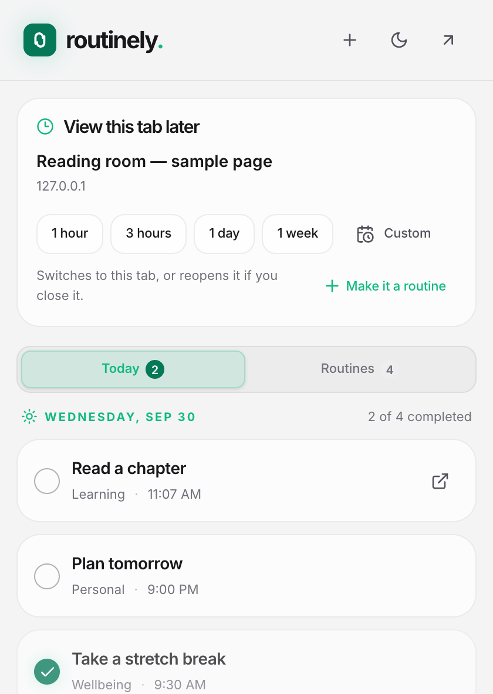

Your pace, your plan.
Every day, selected weekdays, once a month, or every few days. Build a routine around your life.
A little intention, every day
For the chapter you want to read. The break you need to take.
The little things you want to keep coming back to.
Free to use No account needed Made for your browser
A little structure. A clear view of your day.
Real extension. Illustrative routines.Less keeping track. More showing up.
Some things happen every day. Others, every now and then.
Routinely helps you make space for both.
Every day, selected weekdays, once a month, or every few days. Build a routine around your life.
A small floating reminder on the page you choose. Check in, leave a note, or come back a little later.
A completion calendar and a little perspective on your progress. Notice the days you made time.
For the good things you find along the way
Found something you want to read, but not right now? Save the tab for later. Routinely brings it back when you have a moment.

A little less “I'll remember.”Personal by design
Your routines, notes, and saved pages stay in your browser profile. No account to create. No telemetry. No developer cloud to send your data to.
Read our privacy policyA few things you might wonder
A desktop browser and a small habit you'd like to return to. You can build and load Routinely in Chrome or Edge using the GitHub installation instructions. A Firefox build is also supported.
Reminders run while your browser is running. If your device sleeps or you close the browser, Routinely catches up when you return. Browser alarms can arrive late after sleep.
Of course. Snooze a reminder for ten minutes, move it to later today, skip a check-in, or pause a routine for longer. Your completed history stays available.
Your data stays local to this browser profile. There is no cloud sync. You can export a JSON backup and import it into another profile. Back up your data before removing the extension.
Something small is a good place to start
Available from GitHub. Free to use, without an account.